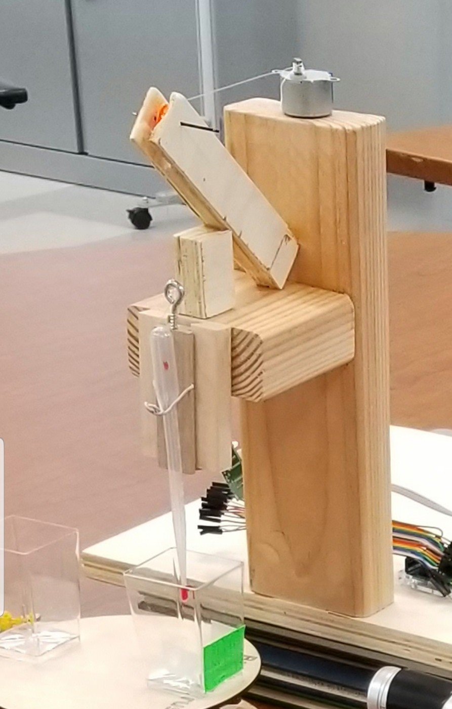

A four-person system that lowers a pipette, collects a 1 mL water sample, and dispenses it into cups indexed by a rotating base, with a vision system measuring pipette-to-sludge distance. I designed and built the gear-driven rotating base.
The built prototype


The completed system: a laser-cut turntable driven by a laser-cut spur gear and stepper motor, with the pipette arm dispensing into cups indexed on the rotating base. Fully automated — no manual intervention during the sampling cycle.
My subsystem — the rotating base


- Gear-driven turntable: a stepper motor drives a laser-cut pinion meshing with the platform gear, converting motor steps into a repeatable fixed rotation increment.
- CAD developed in Onshape, with dimensioned engineering drawings released for fabrication.
- Automated in MATLAB per project requirements.
Released drawing

Constraints I helped define
I owned the team's constraints definition: hard constraints — 1 mL minimum sample, pipette lowered to 1 cm above sludge, fully automated code, fixed-increment rotation; soft constraints — swappable pipettes, cost-effectiveness, wood construction, Onshape and MATLAB toolchain.
Integration & lessons learned


Integrating four independently designed subsystems surfaced real interface issues — stand clearance over the cups on the rotating base, and automating the stepper control end to end. Working through them taught me early lessons in interface management and integration planning that I later applied at much larger scale in manufacturing roles.